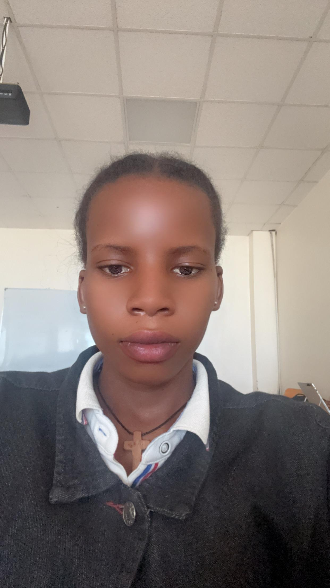

Background
I am a second year Iformation technology with qualified computer skills such as detail computing,programming and web site developing with languages such as java and html. My studing process ivolves at of professionals and intetn trainings which has enabled my accomplish all my computer skills.
Achievements
- I have designed and implemented web sites and softwares through using HTMl and CSS, PHP and MYSQl.
- Leveraging AI and data-driven solutions to develop innovative strategies for environmental preservation, and offering alternative options to reduce environmental impact.
Key Contributions
Design and development of my biography web page